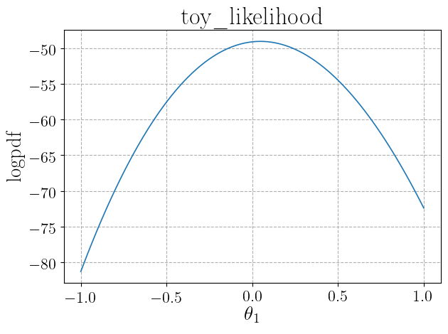

Usage¶
We give here a brief introduction to the use of the Lik class. Refer to the
full class documentation for more details.
The Lik object can be created both by directly inputing the relevant arguments or
automatically,
in case the likelihood function comes from an ATLAS histfactory workspace, by the Histfactory object
through the Histfactory.get_likelihood_object method. In the
the Histfactory object Usage section of the documentation we already gave an example of the latter method.
We give here a very simple (toy) example of creation of the object from input arguments.
The first time a Lik object is created, the logpdf, logpdf_args
(optional, if required by logpdf), logpdf_kwargs (optional, if required by
logpdf), pars_central,
pars_pos_nuis, and pars_pos_poi arguments need to be specified.
Optionally, also the arguments pars_bounds and pars_labels related
to likelihood parameters can be specified. Moreover, the user may specify the additional arguments
output_folder containing the path (either relative or absolute) to a folder where output files will be saved and
name with the name of the object (which is otherwise automatically generated).
To give a simple example, let us start by creating a very simple toy experiment with 10 bins, one nuisance parameter per
bin and one signal strength parameter. The logpdf function could be defined by the code:
import numpy as np
nbI_nominal = np.array(list(reversed([i for i in range(100,1100,100)]))) # Nominal background
nbI_obs = np.random.poisson(nbI_nominal) # Observed counts
nsI_reference = np.array(list(reversed([i for i in range(10,110,10)]))) # Signal prediction for signal strength mu=1
def nbI(delta):
# Background in each bin as function of the 10 nuisance parameters delta
delta = np.array(delta)
return np.array([nbI_nominal[i]*(1+0.1)**delta[i] for i in range(len(delta))])
def nsI(mu):
# Signal in each bin as function of the signal strength parameter mu
return mu*nsI_reference
def nI(pars):
# Expected counts in each bin
mu = pars[0]
delta = pars[1:]
return np.array(nsI(mu)+nbI(delta))
def loglik(pars, obs):
# Log of Poisson likelihood
exp = nI(pars)
logfact = np.array(list(map(lambda x: np.math.lgamma(x+1), obs)))
return np.sum(-1*logfact+obs*np.log(exp)-exp)
def logprior(pars):
# Log of normal distribution for deltas and uniform [-5,5] distribution for mu
mu = pars[0]
delta = pars[1:]
delta_prior = -1/2*np.sum(delta**2+np.full(len(delta),np.log(2*np.pi)))
return delta_prior-np.log(1/(10))
def logpdf(pars, obs):
# Sum of log-likelihood and log-prior
return loglik(pars, obs)+logprior(pars)
This function takes as arguments the parameters (mu, delta) and the observed counts. We can now define arguments related to
parameters (we will not define labels, that will be automatically set by the object initialization)
and initialize the Lik with a few lines of code:
import DNNLikelihood
pars_pos_poi = [0]
pars_pos_nuis = range(1,11)
pars_central = np.insert(np.full(10,0),0,1)
pars_labels = None,
pars_bounds = np.concatenate((np.array([[-5,5]]),
np.vstack([np.full(10,-np.inf),
np.full(10,np.inf)]).T))
likelihood = DNNLikelihood.Lik(name = 'toy',
logpdf = logpdf,
logpdf_args = [nbI_obs],
pars_central = pars_central,
pars_pos_poi = pars_pos_poi,
pars_pos_nuis = pars_pos_nuis,
pars_labels = None,
pars_bounds = pars_bounds,
output_folder = "<my_output_folder>")
When the object is created, it is automatically saved and two files are created:
<my_output_folder>/toy_likelihood.h5
<my_output_folder>/toy_likelihood.log
See the documentation of the Lik.save and
Lik.save_log methods.
The object can also be initialized importing it from saved files. In this case only the input_file
argument needs to be specified, while all other arguments are ignored. One could also optionally specify a new
output_folder. In case this is not specified, the
Lik.output_folder attribute from the imported object is used and the object is
saved updating (overwriting) existing files. If a new output_folder is specified,
then the updated object is saved to the new location. For instance we could import the object created above with
import DNNLikelihood
likelihood = DNNLikelihood.Lik(input_file="<my_output_folder>/toy_likelihood")
When the object is imported, the Lik.log
attribute is updated and saved in the corresponding file Lik.output_log_file.
When the Lik object is created, the logpdf input argument is saved in a FunctionWrapper together
with the optional logpdf_args and logpdf_kwargs
arguments. The numerical value of the lofpdf for a given value of the parameters (for instance the
Lik.pars_central) can be obtained through
likelihood.logpdf(likelihood.pars_central)
The value of the optional logpdf_args and logpdf_kwargs arguemnts, together with the function provided by the
logpdf argument, can be extracted from the FunctionWrapper as follows:
likelihood.logpdf.f
likelihood.logpdf.args
likelihood.logpdf.kwargs
A general logpdf function is given by the Lik.logpdf_fn method, which takes both the function and the
optional arguments as inputs. For instance one could calclulate the logpdf for different values of args (in this case a list containing
an array with the observed counts) and kwargs (in this case an empty dictionary) through
likelihood.logpdf_fn(likelihood.pars_central,*[np.array([1031, 903, 810, 720, 597, 477, 421, 304, 211, 104])],**{})
where we explicitly added empty optional kwargs for illustration purposes. In particular, notice the equivalence of the two members in the
following code:
likelihood.logpdf(likelihood.pars_central)==likelihood.logpdf_fn(likelihood.pars_central,*likelihood.logpdf.args,**likelihood.logpdf.kwargs)
>>> True
One can check the logpdf depencence on the input parameters by plotting it with the
Lik.plot_logpdf_par method. For instance, one can get the plot
for the parameters 0 (signal strength) and 5 (nuisance parameter) in the range (-1,1) with all other
parameters set to their central values (i.e. their values defined in the Lik.pars_central attribute),
through
likelihood.plot_logpdf_par([[0,-1,1],[5,-1,1]],show_plot=True,overwrite=True)
This prints the following plots in the active console
{kind=link}

and saves two files, whose paths are stored in the "Figures" item of the
Lik.predictions attribute:
likelihood.predictions["Figures"]
>> {'<timestamp>': ['<my_output_folder>/figures/toy_likelihood_figure_par_0.pdf',
'<my_output_folder>/figures/toy_likelihood_figure_par_5.pdf']}
Where <timestamp> represents a string of the form “datetime_aaaa_mm_dd_hh_mm_ss_xxxx”.
One could also optionally choose a different central value for the parameters that are kept fixed by passing an argument
pars_init to the Lik.plot_logpdf_par method.
The maximum of the logpdf, and the corresponding parameters values can be obtained with the
Lik.compute_maximum_logpdf method and are stored in the "logpdf_max"
item of the Lik.predictions dictionary attribute:
likelihood.compute_maximum_logpdf(pars_init=None,
optimizer={"method": "Powell",
"options": {"maxiter": 100000,
"ftol": 0.000001}},
timestamp = None,
save=True,
verbose=2)
likelihood.predictions["logpdf_max"]
>>> The key name was not specified and has been set to the default value scipy .
Maximum logpdf computed in 0.09608170000001337 s.
Likelihood log file <my_output_folder>/toy_likelihood.log updated in 0.001088900000013382 s.
Likelihood h5 file <my_output_folder>/toy_likelihood.h5 updated in 0.021218399999952453 s.
{'<timestamp1>': {'x': array([-2.98803800e-02, -8.59623151e-05, 5.05184623e-01, -2.63874465e-01,
1.42943654e-01, -6.22875586e-02, -3.04535012e-01, 2.48640857e-01,
-7.96095990e-02, -7.05881629e-01, 6.54767624e-01]),
'y': -47.78488368123806,
'pars_init': array([1, 0, 0, 0, 0, 0, 0, 0, 0, 0, 0]),
'optimizer': {'method': 'Powell',
'options': {'maxiter': 100000,
'ftol': 1e-06},
'name': 'scipy'},
'optimization_time': 0.09608170000001337}}
Finally, one could profile the logpdf with respect to some of the parameters and compute local maxima through
the Lik.compute_profiled_maxima_logpdf method. This
is useful both to initialize chains in a MCMC or to perform profiled likelihood inference. The result is stored in the
“logpdf_profiled_max” item of the Lik.predictions dictionary attribute.
For instance, profiling with respect to the nuisance parameters for 10 values of the signal strength parameter
on a grid in the (-1,1) interval, can be obtained as follows:
likelihood.compute_profiled_maxima_logpdf(pars=[0],pars_ranges=[[-1,1,50]],spacing="grid",progressbar=True)
likelihood.predictions["logpdf_max"]
likelihood.predictions["logpdf_profiled_max"]
>>> The key name was not specified and has been set to the default value scipy .
Total number of points: 50 .
Optimizing for parameters: [0] - values: [-1.0] .
....
Optimizing for parameters: [0] - values: [1.0] .
Computing global maximum to estimate tmu test statistics.
Maximum logpdf computed in 0.04120020000000579 s.
The file <my_output_folder>/toy_likelihood.h5 already exists. Renaming the old file.
The file <my_output_folder>/toy_likelihood.log already exists. Renaming the old file.
Likelihood log file <my_output_folder>/toy_likelihood.log saved in 0.003590400000007321 s.
Likelihood h5 file <my_output_folder>/toy_likelihood.h5 saved in 0.0317582999999928 s.
Likelihood log file <my_output_folder>/toy_likelihood.log updated in 0.001231000000004201 s.
Likelihood h5 file <my_output_folder>/toy_likelihood.h5 updated in 0.04504560000000879 s.
Log-pdf values lie in the range [ -52.67677189403637 , -47.78528836536065 ]
50 local maxima computed in 2.2449729000000076 s.
>>> {'<timestamp1>': {'x': array([-2.98803800e-02, -8.59623151e-05, 5.05184623e-01, -2.63874465e-01,
1.42943654e-01, -6.22875586e-02, -3.04535012e-01, 2.48640857e-01,
-7.96095990e-02, -7.05881629e-01, 6.54767624e-01]),
'y': -47.78488368123806,
'pars_init': array([1, 0, 0, 0, 0, 0, 0, 0, 0, 0, 0]),
'optimizer': {'method': 'Powell',
'options': {'maxiter': 100000,
'ftol': 1e-06},
'name': 'scipy'},
'optimization_time': 0.09841419999997925},
'<timestamp2>': {'x': array([-0.00270918, -0.02581853, 0.4807844 , -0.28919954, 0.1184546 ,
-0.08654915, -0.32860133, 0.22657899, -0.10060766, -0.72455281,
0.64117127]),
'y': -47.788129773839614,
'pars_init': array([1, 0, 0, 0, 0, 0, 0, 0, 0, 0, 0]),
'optimizer': {'method': 'Powell',
'options': {'maxiter': 10000,
'ftol': 0.001},
'name': 'scipy'},
'optimization_time': 0.04022250000002714}}
>>> {'<timestamp2>': {'X': array([[-1. , 0.8899313 , 1.35465335, 0.6245335 , 0.9935237 ,
0.78380467, 0.53103722, 1.0283211 , 0.6661937 , -0.03512531,
1.17126314],
[-0.95918367, 0.8535685 , 1.31989687, 0.58812031, 0.95857745,
0.74894469, 0.49644844, 0.99593946, 0.63494348, -0.06376707,
1.14898673],
...]),
'Y': array([-51.614645206056835, -51.30792801592227, ...], dtype=object),
'tmu': array([[-1.00000000e+00, 7.65303086e+00],
[-9.59183673e-01, 7.03959648e+00],
...]),
'pars': [0],
'pars_ranges': [[-1, 1, 50]],
'pars_init': array([1, 0, 0, 0, 0, 0, 0, 0, 0, 0, 0]),
'pars_bounds': None,
'optimizer': {'method': 'Powell',
'options': {'maxiter': 10000, 'ftol': 0.001},
'name': 'scipy'},
'optimization_times': [0.04293149999999457,
0.04377169999999353,
...],
'global_optimization_time': 2.1081501000000173}}
The progressbar=True argument allows one to print a progress bar to monitor the evolution of the calculation of the maxima.
If one prefers to scan randomly (with a flat distribution) with respect to using a grid, the
argument spacing="random" can be passed. For additional functionality of the
Lik.compute_profiled_maxima_logpdf method, such as the choice of
the scipy.optimize optimizer, refer to the method documentation.
Finally notice that the Lik.compute_profiled_maxima_logpdf method
also calls the Lik.compute_maximum_logpdf method to computes the
global maximum with the same optimizer and timestamp, used to compute a \(t_{\\mu}\) test statistics. The latter is saved in the
"tmu" item as a list of pairs with parameters in the first column and \(t_{\\mu}\) values in the second one.
The computed values of \(t_{\\mu}\) can be plotted with the
Lik.plot_tmu_1d method as follows:
timestamp=list(likelihood.predictions["logpdf_profiled_max"].keys())[-1]
likelihood.plot_tmu_1d(pars_labels="original",
title_fontsize=12,
timestamp=timestamp,
show_plot=True,
overwrite=True,
verbose=2)
This prints the following plot in the active console

and saves the corresponding file, whose path gets addded to the "Figures" item of the
Lik.predictions attribute:
likelihood.predictions["Figures"]
>> {'timestamp': ['<my_output_folder>/figures/toy_likelihood_figure_par_0.pdf',
'<my_output_folder>/figures/toy_likelihood_figure_par_5.pdf'],
'timestamp2': ['<my_output_folder>/figures/toy_likelihood_figure_tmu_0.pdf']}
Each of the above calls to Lik methods updates the
Lik.log attribute and the corresponding
Lik.output_log_file file (that stores a log of the Lik object).
Even though the files corresponding to the saved object are usually kept sync with the object state, manual change of some attributes
does not update them. Nevertheless, the full object can be saved at any time through
likelihood.save(overwrite=True)
The overwrite=True ensure that the output files (generated when initializing the object) are updated. If one aims at saving the object
to new files, the overwrite=False argument should be passed.
Finally, one can save a likelihood script file that will be used to initialize a Sampler object
(see the Sampler object) as
likelihood.save_script()
which produces the file <my_output_folder>/toy_likelihood_script.py.